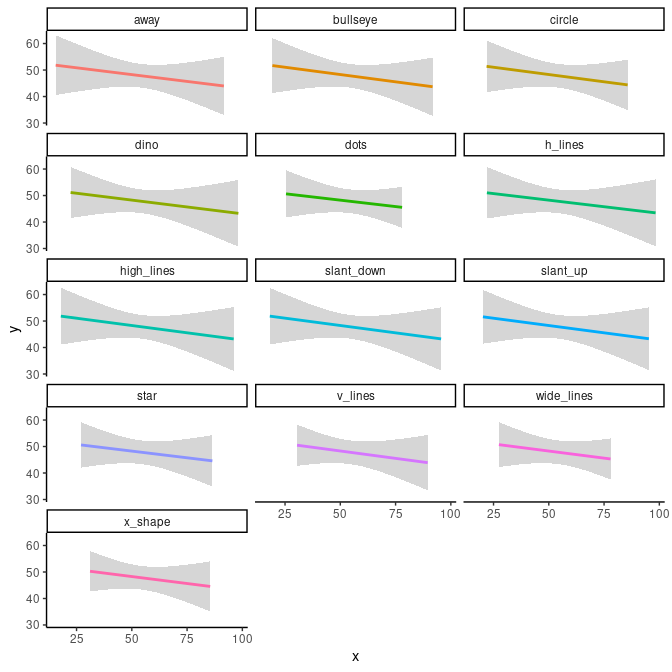
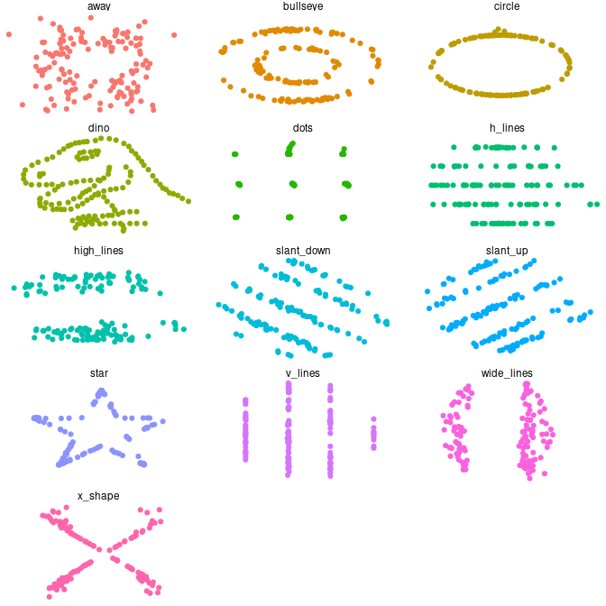

model.Rmd
library(PAGES)This exercise is largely constructed around the datasauRus (Locke and D’Agostino McGowan 2018) package. In addition, I will use again the tidyverse collection packages ggplot2 (Wickham et al. 2020; Wickham 2016) for plotting and dplyr (Wickham et al. 2021) for data manipulations.
The dataset datasaurus_dozen of the datasauRus (Locke and D’Agostino McGowan 2018) package consists of one categorical variable dataset representing subsets of the data, which, in turn, all contain an x and y variable.
First, we will model all datasets with a conventional least square linear regression with geom_smooth() and setting the argument method to `“lm.” We see then that all
#> `geom_smooth()` using formula 'y ~ x'
The theme() and theme_classic() functions in this construction dictate certain visual aspects of the plots. They are of no further relevance.
These plot are a variant of plots known as Anscombe plots, after the statistician Francis Anscombe, demonstrating the importance of graphing data before analysing.
